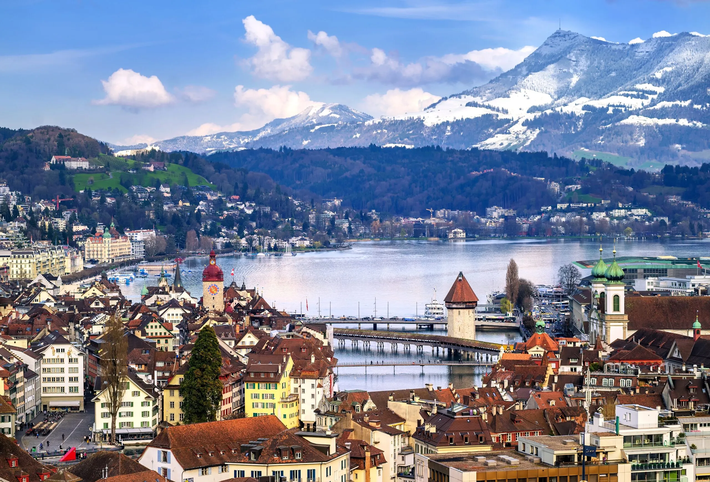
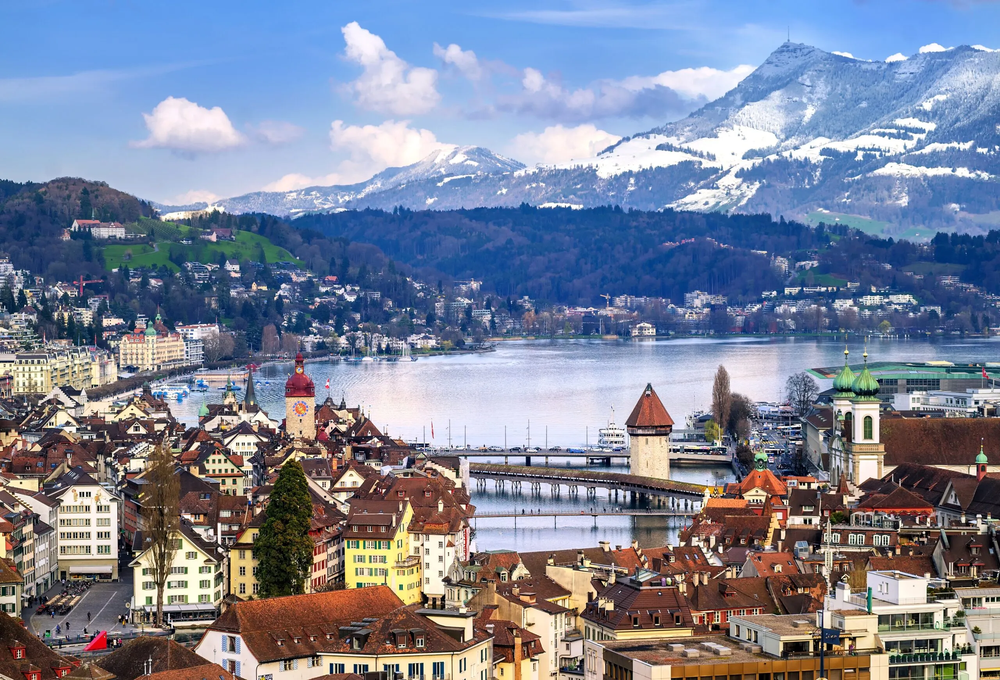

Interlaken is a traditional resort town in the mountainous Bernese Oberland region of central Switzerland.
 

Lucerne is a picturesque Swiss city famous for its lake, mountains, and historic sites like Chapel Bridge and the Lion Monument.

Zurich is Switzerland's largest city, known for its vibrant culture, picturesque Lake Zurich, and charming Old Town.
At Cath's Blog Site, we share exciting travel tips, destinations, and hidden gems in Switzerland. Join us on this amazing journey to explore one of the most beautiful countries in the world!